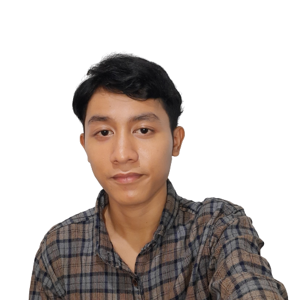

ALIF FADHLURRAHMAN

About MeCopywriting EnthusiastI have a great interest in copywritng, data analytics, illustration design, graphic design, and psychology. I enjoy discussing with others, easy to get along with, and able to work in a team. |
Work Experience
| PRIVATE TUTORING | - Klapanunggal, Bogor |
| Teaching read and write Bahasa Indonesia | |
Aug 2021 - Present
- Help child to read and understand the alphabet
- Accompany the child in understand the material
- Teaching in fun way
| RUMAH QURAN CAHAYAKU | - Klapanunggal, Bogor |
| Teaching read and write the Quran | |
Mar 2021 - Sep 2021
- Teach early childhood children about how to read and write hijaiyah letters and help early teens understand the reading of the Quran
- Responsible for improving understanding and fluency in reading the Quran
Education
| STT TERPADU NURUL FIKRI | - Jagakarsa, Jakarta Selatan |
| Information System | |
Jul 2021 - Present
| SMAN 1 KLAPANUNGGAL | - Klapanunggal, Bogor |
| Departement of Mathematics and Science (MIPA) | |
Jul 2018 - Jul 2021
- Top 10 school rankings during grades 10-12.
- Often becomes the leader of class project.
- Active in organizations and extracurricular activities.
- Easy to get along with fellow students and teachers.
Organisational Experience
| STUDENT COUNCIL | - Klapanunggal, Bogor |
Jan 2019 - Oct 2020
- Oportunity to become Vice Chair 2 since grade 11 and is responsible for and assiting the chairman in managing the organization.
- Become secretary 2 since grade 10 and is responsible for the creation and archiving of files.
- Actively participate in student council activities held outside of school.
- Become a presenter for TITIK SMAN 1 Klapanunggal coverage.
| SCOUTING | - Klapanunggal, Bogor |
Jul 2018 - Jul 2021
- Be an active member of Scouting at school and outside of school.
- Succeeded in becoming a Scout for Bantara Enforcer and Laksana Enforcer of 18-117 Ki Hajar Dewantara.
- Assist Elementary School Scout Leaders in managing and teaching Scouting in their Front Group.
- Participated in the Socialization of Culture Conservation (Cultural Camp) at the Bogor Regency Level in 2019.
Others
- Basic Microsoft Office (Microsoft Word, Microsoft Excel, Microsoft Power Point).
- Copywriting (Beginner).
- HTML (Beginner)
- Python (Beginner).
- Languages : Indonesia (Native) & English (Intermediate).
Get In Touch
 |
 |
 |
 |
 |